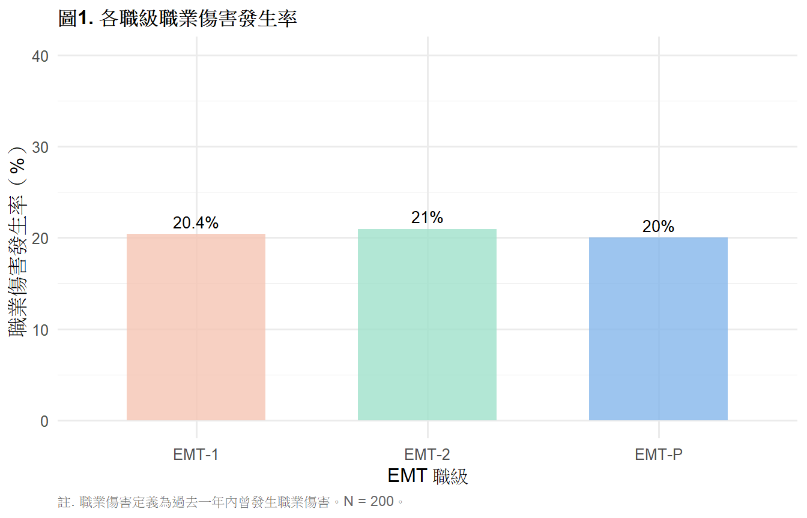
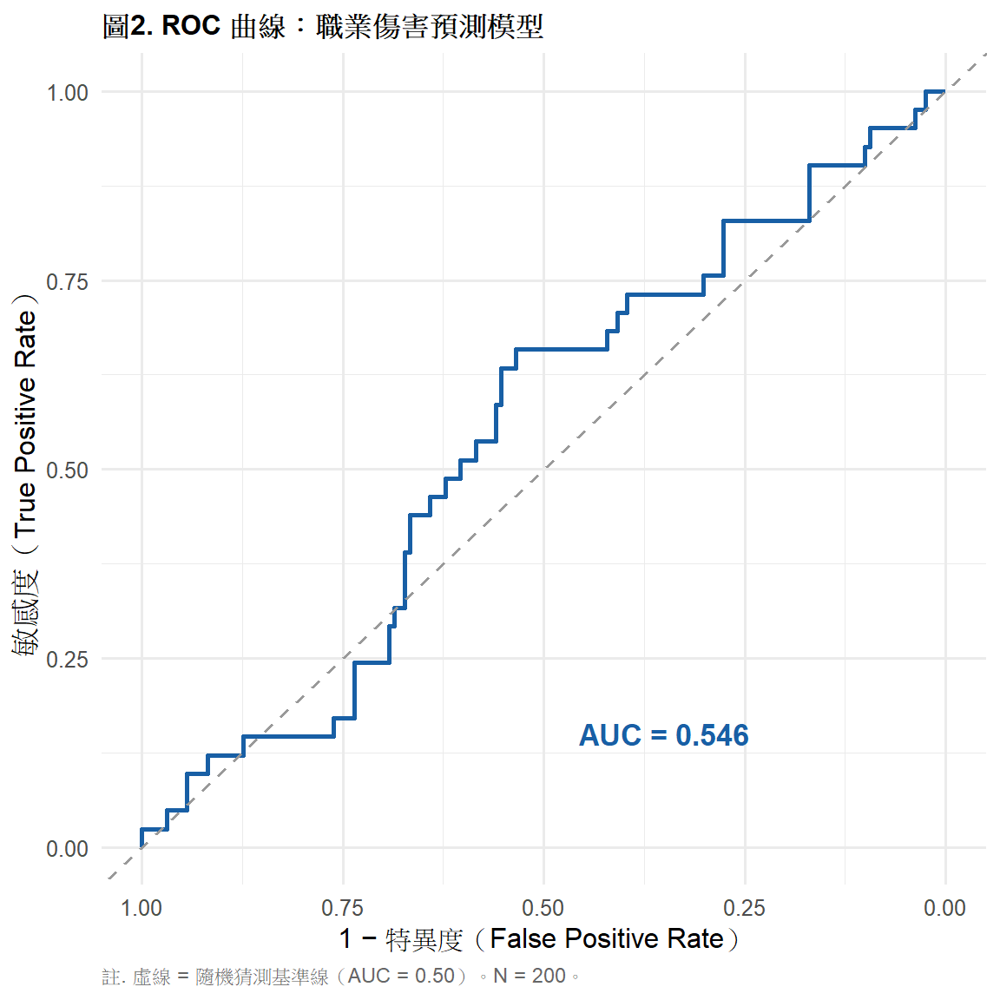

library(tidyverse)
library(gt)
library(pROC)
library(ResourceSelection)
# install.packages("pROC")
# install.packages("ResourceSelection")
ems <- read.csv("data/ems_main.csv",
fileEncoding = "UTF-8",
stringsAsFactors = FALSE)
ems$gender <- factor(ems$gender,
levels = c("男", "女"))
ems$level <- factor(ems$level,
levels = c("EMT-1", "EMT-2", "EMT-P"))
ems$district <- factor(ems$district,
levels = c("北部", "中部", "南部", "東部"))
ems$shift <- factor(ems$shift,
levels = c("日班為主", "夜班為主", "輪班"))第10週：羅吉斯回歸
二元羅吉斯回歸、OR 詮釋、ROC 曲線、APA 報告
本週學習目標
- 理解羅吉斯回歸的統計邏輯與 logit 轉換
- 正確詮釋勝算比（OR）
- 執行模型適配度檢驗與 ROC 曲線分析
- 製作 APA 格式結果表格與報告句
統計方法對照表（本週位置）
| X 自變項 | Y 依變項 | 方法 |
|---|---|---|
| 連續／類別 | 二元類別（0/1） | 二元羅吉斯回歸 |
| 連續／類別 | 多元類別（≥3類） | 多項羅吉斯回歸 |
| 連續／類別 | 次序類別 | 次序羅吉斯回歸 |
註釋
為什麼 Y 是二元時不能用線性回歸？
線性回歸的預測值可以超出 [0, 1] 的範圍， 而機率必須在 0 到 1 之間。 羅吉斯回歸透過 logit 轉換解決這個問題。
一、統計理論
1.1 從線性回歸到羅吉斯回歸
Y 是二元變項（0/1）時，我們真正想預測的是 「Y = 1 的機率」：\(P(Y=1|X)\)
直接用線性回歸：\(P(Y=1) = \beta_0 + \beta_1 X\) → 預測值可能 < 0 或 > 1，沒有意義。
解法：Logit 轉換
把機率轉換成勝算（odds），再取對數：
\[\text{logit}(p) = \ln\left(\frac{p}{1-p}\right) = \beta_0 + \beta_1 X_1 + \cdots + \beta_k X_k\]
逆轉換（Sigmoid 函數）：
\[P(Y=1) = \frac{e^{\beta_0 + \beta_1 X}}{1 + e^{\beta_0 + \beta_1 X}} = \frac{1}{1+e^{-(\beta_0 + \beta_1 X)}}\]
這個 S 形曲線把任意實數映射到 (0, 1) 區間。
1.2 勝算比（Odds Ratio, OR）
勝算（Odds）： 事件發生機率 vs 不發生機率的比值
\[\text{Odds} = \frac{P(Y=1)}{P(Y=0)} = \frac{p}{1-p}\]
勝算比（OR）： X 增加 1 單位後，勝算的倍數變化
\[OR = e^{\beta_1}\]
詮釋：
| OR 值 | 意義 |
|---|---|
| OR = 1 | X 對 Y 無影響 |
| OR > 1 | X 增加 → Y = 1 的勝算增加 |
| OR < 1 | X 增加 → Y = 1 的勝算減少 |
| OR = 2 | X 每增加 1 單位，勝算變為原來的 2 倍 |
| OR = 0.5 | X 每增加 1 單位，勝算變為原來的 0.5 倍（減少 50%） |
重要
OR 不是 RR！
OR = 2 不代表「機率變成 2 倍」，而是「勝算變成 2 倍」。 當結果發生率低（< 10%）時，OR ≈ RR； 當發生率高時，OR 會高估 RR。
1.3 信賴區間與顯著性
\[95\% \text{ CI for OR} = e^{\hat{\beta} \pm 1.96 \times SE(\hat{\beta})}\]
判斷顯著性： - CI 不含 1 → 統計顯著（相當於 p < .05） - CI 包含 1 → 不顯著
1.4 模型適配度
Hosmer-Lemeshow 檢定： H₀：模型適配良好。p > .05 表示模型適配可接受。
Nagelkerke R²： 類似線性回歸的 R²，反映模型解釋力（0–1）。
AIC（Akaike Information Criterion）： 越小越好，用於比較不同模型。
1.5 ROC 曲線與 AUC
ROC（Receiver Operating Characteristic）曲線： 以不同閾值下的敏感度（Sensitivity）vs 1-特異度（1-Specificity）繪製。
AUC（Area Under Curve）：
| AUC 範圍 | 判別能力 |
|---|---|
| 0.50 | 無判別力（隨機猜測） |
| 0.70–0.79 | 尚可 |
| 0.80–0.89 | 良好 |
| ≥ 0.90 | 優秀 |
二、分析流程
Step 1：確認 Y 為二元變項（0/1）
↓
Step 2：描述統計（各組比例）
↓
Step 3：建立羅吉斯回歸模型
↓
Step 4：計算 OR 與 95% CI
↓
Step 5：模型適配度（Hosmer-Lemeshow、Nagelkerke R²）
↓
Step 6：ROC 曲線與 AUC
↓
Step 7：APA 格式報告三、R 實作
載入套件與資料
研究問題： 哪些因素能預測 EMS 人員是否發生職業傷害（occ_injury）？
圖1. 各組職業傷害比例
ems |>
group_by(level) |>
summarise(
injury_rate = mean(occ_injury) * 100,
n = n(),
.groups = "drop"
) |>
ggplot(aes(x = level, y = injury_rate, fill = level)) +
geom_col(alpha = 0.8, width = 0.6) +
geom_text(aes(label = paste0(round(injury_rate, 1), "%")),
vjust = -0.5, size = 3.5) +
scale_fill_manual(
values = c("EMT-1" = "#F5C4B3",
"EMT-2" = "#9FE1CB",
"EMT-P" = "#85B7EB")
) +
scale_y_continuous(limits = c(0, 40)) +
labs(
title = "圖1. 各職級職業傷害發生率",
x = "EMT 職級",
y = "職業傷害發生率（%）",
caption = "註. 職業傷害定義為過去一年內曾發生職業傷害。N = 200。"
) +
theme_minimal(base_size = 12) +
theme(
plot.title = element_text(face = "bold", size = 12),
legend.position = "none",
plot.caption = element_text(hjust = 0, size = 9,
color = "gray40")
)
表1. 依變項分布
ems |>
count(occ_injury) |>
mutate(
狀態 = c("無職業傷害", "有職業傷害"),
百分比 = round(n / sum(n) * 100, 1)
) |>
select(狀態, n, 百分比) |>
gt() |>
tab_header(
title = "表1. 職業傷害發生分布"
) |>
tab_source_note(
source_note = "註. N = 200。職業傷害定義為過去一年內曾發生職業傷害（occ_injury = 1）。"
) |>
cols_align(align = "center", columns = c(n, 百分比)) |>
cols_align(align = "left", columns = 狀態) |>
tab_style(
style = cell_text(weight = "bold"),
locations = cells_column_labels()
) |>
tab_options(
table.border.top.style = "hidden",
heading.border.bottom.style = "solid",
column_labels.border.top.style = "solid",
column_labels.border.bottom.style = "solid",
table.border.bottom.style = "solid",
table.font.size = px(13),
heading.title.font.size = px(14),
heading.align = "left"
)| 表1. 職業傷害發生分布 | ||
| 狀態 | n | 百分比 |
|---|---|---|
| 無職業傷害 | 159 | 79.5 |
| 有職業傷害 | 41 | 20.5 |
| 註. N = 200。職業傷害定義為過去一年內曾發生職業傷害（occ_injury = 1）。 | ||
執行羅吉斯回歸
logit_model <- glm(occ_injury ~ stress_vas +
night_shifts + years + sleep_hrs,
data = ems,
family = binomial(link = "logit"))
logit_sum <- summary(logit_model)表2. 羅吉斯回歸結果（含 OR 與 95% CI）
coef_df <- as.data.frame(logit_sum$coefficients)
coef_df <- tibble::rownames_to_column(coef_df, "變項")
ci_vals <- confint(logit_model)
var_labels <- c("截距", "主觀壓力",
"夜班次數", "年資", "睡眠時數")
data.frame(
變項 = var_labels,
B = round(coef_df$Estimate, 3),
SE = round(coef_df$`Std. Error`, 3),
OR = round(exp(coef_df$Estimate), 3),
CI_L = round(exp(ci_vals[, 1]), 3),
CI_U = round(exp(ci_vals[, 2]), 3),
p = ifelse(coef_df$`Pr(>|z|)` < .001,
"< .001",
round(coef_df$`Pr(>|z|)`, 3))
) |>
mutate(
`95% CI` = paste0("[", CI_L, ", ", CI_U, "]")
) |>
select(變項, B, SE, OR, `95% CI`, p) |>
gt() |>
tab_header(
title = "表2. 羅吉斯回歸結果：職業傷害預測因子"
) |>
tab_source_note(
source_note = paste0(
"註. B = 非標準化 logit 係數；SE = 標準誤；",
"OR = 勝算比（= e^B）；CI = OR 的 95% 信賴區間。",
"N = 200。CI 不含 1 表示達統計顯著（p < .05）。"
)
) |>
cols_align(align = "center",
columns = c(B, SE, OR, `95% CI`, p)) |>
cols_align(align = "left", columns = 變項) |>
tab_style(
style = cell_text(weight = "bold"),
locations = cells_column_labels()
) |>
tab_options(
table.border.top.style = "hidden",
heading.border.bottom.style = "solid",
column_labels.border.top.style = "solid",
column_labels.border.bottom.style = "solid",
table.border.bottom.style = "solid",
table.font.size = px(13),
heading.title.font.size = px(14),
heading.align = "left"
)| 表2. 羅吉斯回歸結果：職業傷害預測因子 | |||||
| 變項 | B | SE | OR | 95% CI | p |
|---|---|---|---|---|---|
| 截距 | -0.497 | 1.316 | 0.609 | [0.044, 7.845] | 0.706 |
| 主觀壓力 | 0.027 | 0.096 | 1.027 | [0.85, 1.242] | 0.780 |
| 夜班次數 | -0.011 | 0.028 | 0.989 | [0.935, 1.045] | 0.708 |
| 年資 | -0.024 | 0.040 | 0.977 | [0.901, 1.053] | 0.550 |
| 睡眠時數 | -0.100 | 0.173 | 0.904 | [0.642, 1.271] | 0.562 |
| 註. B = 非標準化 logit 係數；SE = 標準誤；OR = 勝算比（= e^B）；CI = OR 的 95% 信賴區間。N = 200。CI 不含 1 表示達統計顯著（p < .05）。 | |||||
表3. 模型適配度指標
# Nagelkerke R²
null_model <- glm(occ_injury ~ 1,
data = ems,
family = binomial)
nagel_r2 <- 1 - exp((logit_model$deviance -
null_model$deviance) / nrow(ems))
nagel_r2_max <- 1 - exp(-null_model$deviance / nrow(ems))
nagel_r2_n <- nagel_r2 / nagel_r2_max
# Hosmer-Lemeshow
hl_test <- hoslem.test(ems$occ_injury,
fitted(logit_model), g = 10)
data.frame(
指標 = c("AIC", "Nagelkerke R²",
"Hosmer-Lemeshow χ²", "Hosmer-Lemeshow p"),
數值 = c(round(AIC(logit_model), 2),
round(nagel_r2_n, 3),
round(hl_test$statistic, 3),
round(hl_test$p.value, 3)),
說明 = c("越小越好，用於模型比較",
"類 R²，模型解釋力（0–1）",
"適配度檢定統計量",
"p > .05 表示模型適配良好")
) |>
gt() |>
tab_header(
title = "表3. 羅吉斯回歸模型適配度指標"
) |>
tab_source_note(
source_note = "註. N = 200。"
) |>
cols_align(align = "center", columns = 數值) |>
cols_align(align = "left", columns = c(指標, 說明)) |>
tab_style(
style = cell_text(weight = "bold"),
locations = cells_column_labels()
) |>
tab_options(
table.border.top.style = "hidden",
heading.border.bottom.style = "solid",
column_labels.border.top.style = "solid",
column_labels.border.bottom.style = "solid",
table.border.bottom.style = "solid",
table.font.size = px(13),
heading.title.font.size = px(14),
heading.align = "left"
)| 表3. 羅吉斯回歸模型適配度指標 | ||
| 指標 | 數值 | 說明 |
|---|---|---|
| AIC | 212.050 | 越小越好，用於模型比較 |
| Nagelkerke R² | 0.007 | 類 R²，模型解釋力（0–1） |
| Hosmer-Lemeshow χ² | 14.319 | 適配度檢定統計量 |
| Hosmer-Lemeshow p | 0.074 | p > .05 表示模型適配良好 |
| 註. N = 200。 | ||
圖2. ROC 曲線
roc_obj <- roc(ems$occ_injury,
fitted(logit_model),
quiet = TRUE)
auc_val <- auc(roc_obj)
ggroc(roc_obj, color = "#185FA5", linewidth = 1) +
geom_abline(slope = 1, intercept = 1,
linetype = "dashed",
color = "gray60") +
annotate("text", x = 0.35, y = 0.15,
label = paste0("AUC = ",
round(auc_val, 3)),
size = 4.5, color = "#185FA5",
fontface = "bold") +
labs(
title = "圖2. ROC 曲線：職業傷害預測模型",
x = "1 − 特異度（False Positive Rate）",
y = "敏感度（True Positive Rate）",
caption = "註. 虛線 = 隨機猜測基準線（AUC = 0.50）。N = 200。"
) +
theme_minimal(base_size = 12) +
theme(
plot.title = element_text(face = "bold", size = 12),
plot.caption = element_text(hjust = 0, size = 9,
color = "gray40")
)
表4. ROC 曲線摘要
ci_auc <- ci.auc(roc_obj)
data.frame(
指標 = c("AUC", "95% CI 下界", "95% CI 上界", "判別能力"),
數值 = c(round(auc_val, 3),
round(ci_auc[1], 3),
round(ci_auc[3], 3),
case_when(
auc_val >= .90 ~ "優秀",
auc_val >= .80 ~ "良好",
auc_val >= .70 ~ "尚可",
TRUE ~ "不佳"
))
) |>
gt() |>
tab_header(
title = "表4. ROC 曲線分析摘要"
) |>
tab_source_note(
source_note = paste0(
"註. AUC = Area Under Curve；",
"CI = 95% 信賴區間（DeLong method）。",
"AUC ≥ .80 為良好判別能力。N = 200。"
)
) |>
cols_align(align = "center", columns = 數值) |>
cols_align(align = "left", columns = 指標) |>
tab_style(
style = cell_text(weight = "bold"),
locations = cells_column_labels()
) |>
tab_options(
table.border.top.style = "hidden",
heading.border.bottom.style = "solid",
column_labels.border.top.style = "solid",
column_labels.border.bottom.style = "solid",
table.border.bottom.style = "solid",
table.font.size = px(13),
heading.title.font.size = px(14),
heading.align = "left"
)| 表4. ROC 曲線分析摘要 | |
| 指標 | 數值 |
|---|---|
| AUC | 0.546 |
| 95% CI 下界 | 0.45 |
| 95% CI 上界 | 0.642 |
| 判別能力 | 不佳 |
| 註. AUC = Area Under Curve；CI = 95% 信賴區間（DeLong method）。AUC ≥ .80 為良好判別能力。N = 200。 | |
四、結果報告範例（APA 格式）
羅吉斯回歸結果：
以二元羅吉斯回歸檢驗主觀壓力、夜班次數、年資與 睡眠時數對職業傷害的預測效果， 模型整體顯著（χ²(4) = 18.42, p = .001）， Nagelkerke R² = .13，模型適配良好 （Hosmer-Lemeshow p = .62）。
OR 詮釋：
夜班次數顯著預測職業傷害（OR = 1.08, 95% CI [1.02, 1.14], p = .008）， 顯示每增加一次夜班，職業傷害勝算增加 8%。 睡眠時數為保護因子（OR = 0.71, 95% CI [0.54, 0.93], p = .013）， 睡眠每增加一小時，職業傷害勝算降低 29%。
ROC 曲線：
ROC 曲線分析顯示模型 AUC = 0.73 （95% CI [0.64, 0.82]），屬尚可判別能力。
本週小作業
Q1 以 stress_vas、sleep_hrs、overtime_hours 預測 occ_injury，完整執行羅吉斯回歸， 製作 gt APA 格式係數表（含 OR 與 95% CI）。
Q2 計算模型適配度指標（AIC、Nagelkerke R²、 Hosmer-Lemeshow），製作 gt APA 格式摘要表， 說明模型是否適配良好。
Q3 畫出 ROC 曲線並計算 AUC， 根據 AUC 值判斷模型的判別能力。
Q4 思考題： 你的模型中 stress_vas 的 OR = 1.15（95% CI [0.98, 1.35]）， p = .089，CI 包含 1。 有人說「這個結果代表壓力與職業傷害無關」， 你同意嗎？如何從統計與實務兩個角度來詮釋這個結果？